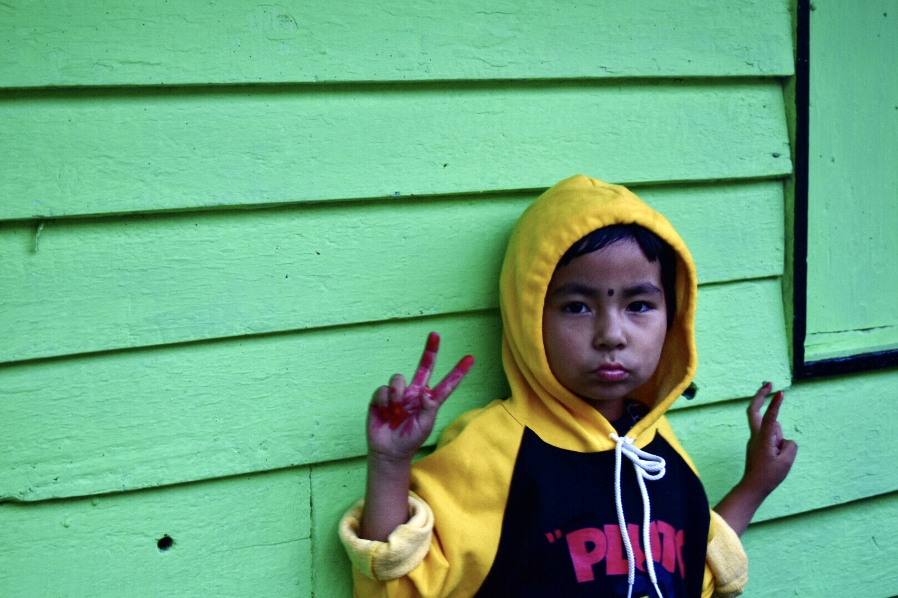
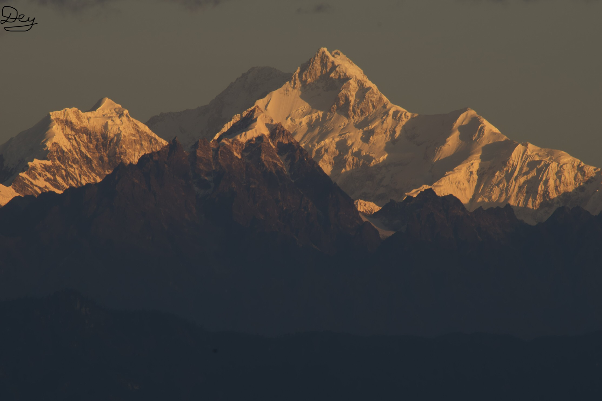
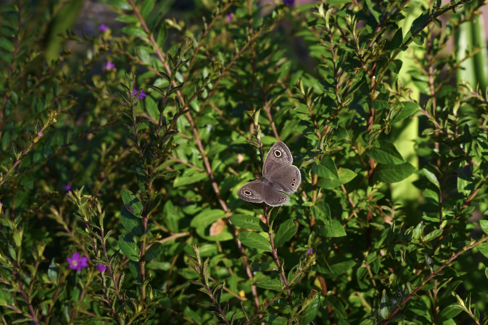

At Icche-gaon, near Kalimpong. The road to the location was extremely steep and was entirely made of loose rocks. Was a wonder we didn't skid.
A local of Singalila National Park, 7000 feet above sea level. The simple and fulfilling lives of the people are an inspiration to the fast paced unhappy lifestyle one leads in a metropolitan city.
The ever famous Kanchenjunga. One of the most majestic sights one can hope to see in one's life. The mountain range almost makes it look like a person sleeping in Savasana, and the locals call it "sleeping Buddha".

Captured on the way to Kalimpong. The valley reflects the sunlight, making the river look bloody red at Sunset. One of the best mountain roads I have ever been on.

Sunset at Singalila National Park. The various colours on the sky were soon replaced by numerous stars of the milky way.
At Dooars, near Lataguri. The light was perfect for this shot.